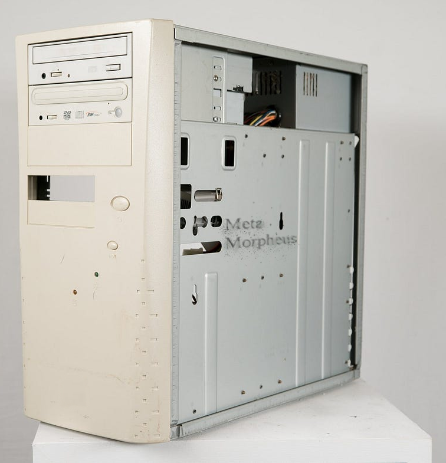

APP-128 shall be contained in a Standard Electronic Holding Cell, and always kept on and maintainted every other day.
In case of power outages, an auxillary generator specifically assigned for APP-128 shall take over, and keep it powered until normal functions are resumed.
No Personnel should acknowledge APP-128's existence verbally when observing it in its off state.
Any use of APP-128 or advancement of its form should be coordinated with at least 5 Level-ο Personnel.
Retrieval:
In ██-██-2000, a Protocol Upholder on routine patrol noticed APP-128 in a corridor in Site-64, turned off.
Once the PU called for assistance in identifying APP-128 by describing it verbally to another PU, a metal screeching sound emanated from its position.
Afterwards, APP-128 had transformed into another, more modern version of itself. This happened a total of 3 times until it was retrieved and placed into its holding cell.
Entity Description:

APP-128's appearance upon containment.
APP-128 is a full-tower computer case standing at 25 inches tall, off-white in colour, and from an unknown brand. The text "MetaMorpheus" is engraved on its side panel.
Once described while in its "off" state, it will metamorphose into a newer form with higher specifications, presumably to no end.
It is not currently known how APP-128 knows what components fulfill its requirement of advancing to the next form, or from where it procures these components.
Following further experimentation, it was deduced that each subsequent form gained new specifications and increased in processing power by a factor of 2.
Considering its relatively safe maintenance and low threat level, Amin designation has been approved.
Addendum: Update-Log-128-1
As of ██-██-████, APP-128 has reached peak performance for comparable devices in the technology sector, including ones currently in development.
Request to allow APP-128 to metamorphose again for research purposes.
Addendum: Update-Log-128-2
Request Granted; one metamorphosis cycle allowed.
Addendum: Report-Log-128, written by Dr.████████ Reymann
Metal screeching was louder than usual, and persisted for 60 minutes precisely.
Additional thumping sounds were heard around the cell, until multiple of Site-64's mainframes were drawn to APP-128 at immense speeds, causing unprecedented prolonged downtime in our systems.
Once contact was made, APP-128 became entirely unrecognizable and alien. We don't even know how to analyse this, much less describe it.
Its safe to say it won't evolve anytime soon.
Request to change its Entity Description.
Nevermind, we will just describe its incarnation when we first contained it.